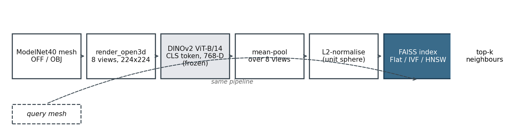
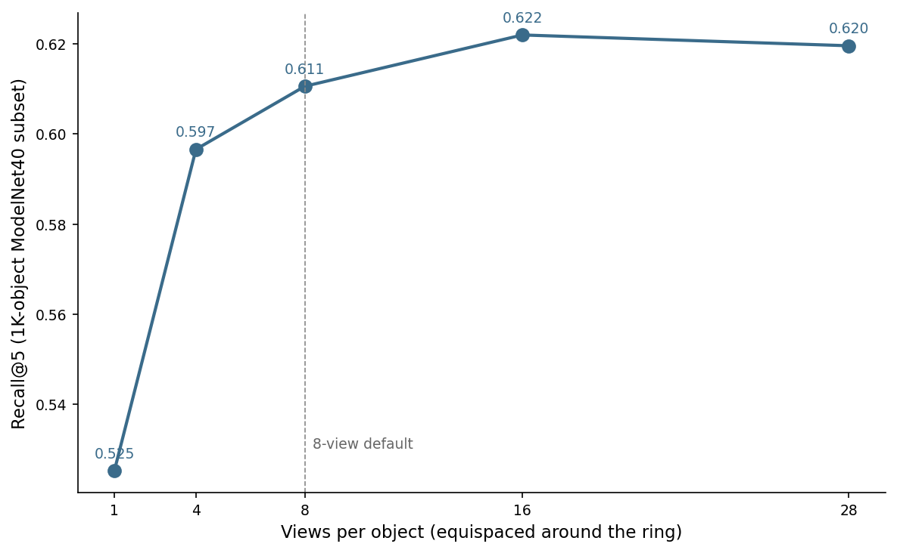
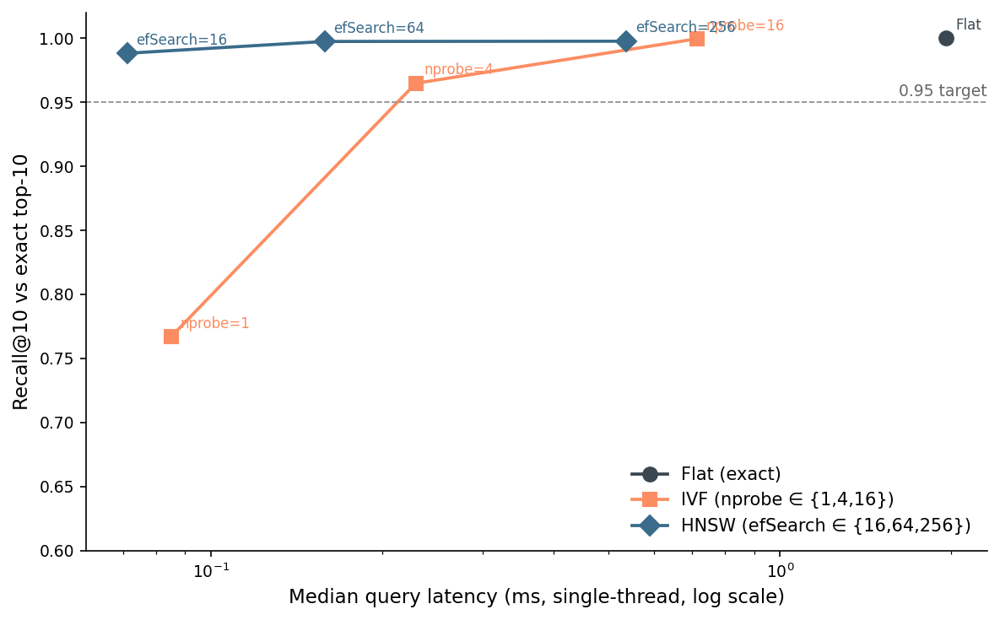
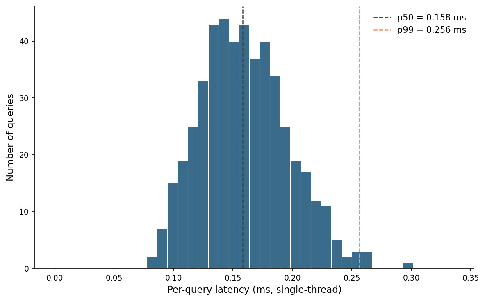
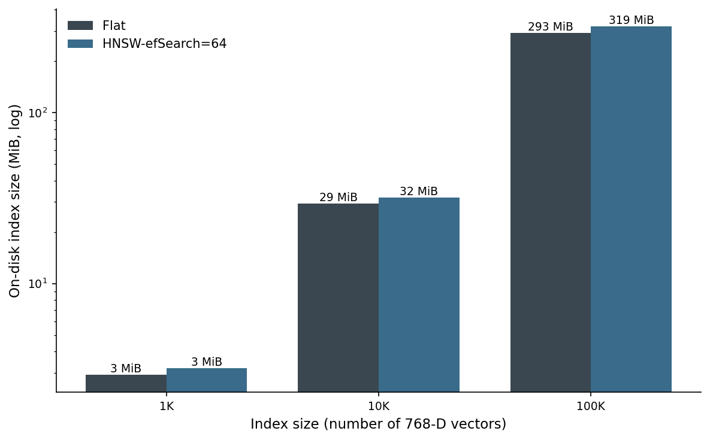
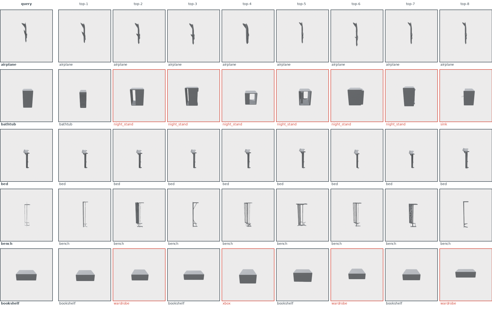
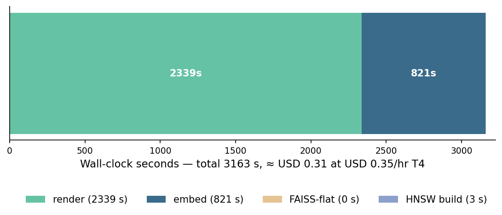
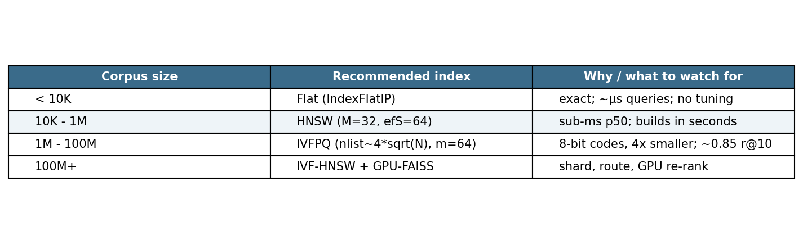

I dropped a chair into a FAISS index over 7,915 ModelNet40 objects and got eight plausible neighbours back in 0.16 milliseconds. The index file is 24 megabytes. The whole pipeline — render, embed, build, query — ran in 53 minutes on a Tesla T4 and cost thirty-one cents.
This post is the story of how that fits in 200 lines of Python, and what I had to give up to make it that small. The controlling question: when somebody says "3D search engine," what does the thing actually cost? Not the press release. The smallest honest version that you would run on a Saturday afternoon and trust the next morning.
There are five moving parts. Render the mesh. Push the renders through an off-the-shelf vision encoder. Pool the per-view vectors. Normalise. Drop into an approximate-nearest-neighbour index.

Every stage but the index is stateless. The encoder is frozen weights. The renderer is geometry. Pooling is mean(axis=1). Normalising is dividing by a norm. The only thing that holds onto your work is the FAISS index, and that you can rebuild from the saved embedding vectors in three seconds. That property means a corpus upgrade — add 50K Objaverse objects tomorrow — is render-and-embed for the new objects plus a re-add. It does not require touching anything that has shipped.
Here is the render-and-embed half, the part that costs you compute.
from medium20.render_kit import horizontal_ring, load_canonical, render_open3d
from transformers import AutoImageProcessor, AutoModel
import numpy as np, torch
cams = horizontal_ring(n=8, elev_deg=20) # Post 02's canonical ring
mesh = load_canonical(path) # Post 01's loader: parse + center + unit-sphere
imgs = render_open3d(mesh, cams, image_size=224) # → (8, 224, 224, 3) uint8
proc = AutoImageProcessor.from_pretrained("facebook/dinov2-base")
model = AutoModel.from_pretrained("facebook/dinov2-base").cuda().eval()
with torch.no_grad():
inp = proc(images=list(imgs), return_tensors="pt").to("cuda")
cls = model(**inp).last_hidden_state[:, 0, :] # (8, 768) CLS tokens
vec = cls.mean(dim=0).cpu().numpy() # mean-pool → (768,)
vec = vec / np.linalg.norm(vec) # L2-normalise → unit sphereEight 224×224 Open3D renders take about 0.29 s per mesh on the T4 — the renderer's per-frame setup dominates. The DINOv2 forward pass at batch 32 runs at 77 images/s, so eight views cost another 0.10 s. Call it 0.4 s per object end to end.
The index half is two lines.
import faiss
index = faiss.IndexFlatIP(768)
index.add(vectors) # (N, 768) float32, L2-normalised
D, I = index.search(query[None, :], k=10)IndexFlatIP is exact: inner product over L2-normalised vectors is cosine similarity. At 8K objects it's also fast enough — 1.96 ms per query — that the "approximate" part of ANN is overkill. We'll get to when it stops being overkill.
The encoder is DINOv2-ViT-B/14 because Post 05 settled the head-to-head: DINOv2-mean beats CLIP-mean by 4-6 points of retrieval-precision@5 on a 10-class ModelNet40 pool, and the gap is largest where shape is the harder problem. CLIP has a 5x throughput edge that matters at million-object scale; at ten thousand objects on a T4 it pays for itself in fourteen minutes and never thinks about it again.
The most expensive thing about this pipeline is the rendering. Multi-view DINOv2 turns one mesh into eight images plus eight forward passes; one-view DINOv2 turns one mesh into one image and one forward pass. So the obvious question is whether one would do.
I built embeddings for the same 1,000 ModelNet40 objects using 1, 4, 8, 16, and 28 views — the same horizontal ring, just sampled at different densities. Then I measured recall@5 against a leave-one-out class-match: how often does the nearest neighbour share a class with the query? (Different metric from the retrieval@5 in Post 05's 20-per-class pool — absolute numbers are different and the shape is what to read.)

The intuition "more views = more signal" breaks at 16: from 16 to 28 the curve actually drops 0.2 points. My guess is that the mean of 28 redundant views damps real signal as efficiently as it damps view-dependent noise. Sixteen is the true peak; eight is the spot where the curve is mostly flat for half the cost.
Eight wins on practical grounds. Twice the render cost of four for 1.4 points of recall, half the render cost of sixteen for 1.1 points. The 8-view default is not magic; it's the elbow. It also matches what Post 02 introduced as horizontal_ring(n=8, elev_deg=20) and what Posts 05 and 06 measured against.
The question that defines the architecture: how much recall are you willing to spend for how much latency?
Exact search is the baseline. At 7,915 objects and 768 dimensions, that's a single matrix-vector multiply: 7,915 dot products of length 768, top-k extraction. FAISS does it single-threaded in 1.96 ms (p50). You can call this a search engine and it will be honest.
Approximate-nearest-neighbour indices buy you the right to do less work. Two families dominate. IVF clusters the corpus with k-means at build time and at query time only looks at the nearest clusters; the nprobe knob controls how many clusters you visit, with fewer meaning faster and worse recall. HNSW builds a multi-layer graph where each node has links to a handful of neighbours at each scale. A query is a greedy walk: start from a fixed entry node, hop to whichever neighbour is closer to the query, repeat. The efSearch knob controls how many candidates the walk holds in its priority queue.
I built both on the same 7,435 corpus / 480 held-out queries, with ground-truth top-50 from the exact Flat index. Then I swept the obvious knobs: IVF with nprobe ∈ {1, 4, 16} over nlist=64, HNSW with efSearch ∈ {16, 64, 256} at M=32, efConstruction=200.

HNSW wins the Pareto frontier and it isn't close. At efSearch=64 you get recall@10 of 0.998 — within 0.2% of exact — for a p50 query latency of 0.158 ms. That is twelve times faster than Flat for 0.2% of recall. The p99 is 0.256 ms.
The recommended working point is HNSW at efSearch=64. Below that, efSearch=16 shaves 90 µs and drops recall@10 to 0.988. Above 64, latency triples for one tenth of a point of recall.
The full table.
Table 1. All seven index variants on the 7,435-corpus / 480-query split. Latency is single-threaded; memory is process resident peak after build. Bold is the recommended working point.
| Index | build (s) | size (MiB) | recall@5 | recall@10 | recall@50 | p50 (ms) | p99 (ms) | RAM peak (GiB) |
|---|---|---|---|---|---|---|---|---|
| Flat | 0.02 | 21.78 | 1.000 | 1.000 | 1.000 | 1.960 | 2.312 | 0.26 |
| IVF nprobe=1 | 0.25 | 22.03 | 0.785 | 0.767 | 0.671 | 0.085 | 0.132 | 0.29 |
| IVF nprobe=4 | 0.24 | 22.03 | 0.969 | 0.965 | 0.930 | 0.229 | 0.336 | 0.32 |
| IVF nprobe=16 | 0.23 | 22.03 | 1.000 | 1.000 | 0.997 | 0.714 | 0.875 | 0.32 |
| HNSW efSearch=16 | 2.92 | 23.71 | 0.988 | 0.988 | 0.880 | 0.071 | 0.130 | 0.33 |
| HNSW efSearch=64 | 2.99 | 23.71 | 0.993 | 0.998 | 0.997 | 0.158 | 0.256 | 0.33 |
| HNSW efSearch=256 | 2.98 | 23.71 | 0.993 | 0.998 | 0.999 | 0.537 | 0.783 | 0.33 |
Source: data/recall-latency-tradeoff.csv (7 rows).
Three things to stare at. The build time gap: HNSW takes three seconds because it builds the graph; IVF takes 0.25 because it runs k-means once and indexes by cluster ID. The file size is the embedding storage: 7,915 × 768 × 4 bytes = 23.2 MiB, and all three index types land within 2 MiB of that. The p99 / p50 ratio on HNSW is 1.6x — tighter than I expected from a graph traversal. The walk converges quickly because the graph is well-built.
The histogram of per-query latency for the chosen working point.

The tail is shockingly short. I expected the p99 of a graph-walk index to be considerably worse than the median because some queries land in awkward parts of the graph. They do — a handful out near 0.3 ms — but the spread is tiny in absolute terms. A 10K-object DINOv2 index on a 16-vCPU box can sustain six thousand single-thread queries per second.
At 7,915 objects, every index variant is fast enough that the choice barely matters. The whole reason ANN exists is to keep being fast when the corpus stops being small.
I padded the embedding matrix up to 1K, 10K, and 100K via tiny-jitter duplicates of the real vectors (sigma 0.005 on each L2-normalised vector, then re-normalised — enough to defeat exact deduplication, not enough to change the geometric structure). The point is not to measure recall on the synthetic data — the recall numbers above are the real ones, on the real 7,915. The point is to measure memory and latency under realistic load.

The Flat index is the embedding matrix in row-major float32: 768 × 4 × N bytes. At 100K objects that's 293 MiB. At 1M it's 2.9 GiB. At 10M it's 29 GiB, where you start thinking about product quantisation or sharding.
The HNSW index adds about 9% for the graph edges. Its build cost grows superlinearly: 0.23 s at 1K, 4.3 s at 10K, 61 s at 100K. Beyond about a million nodes, HNSW build starts taking minutes per shard and most teams move to sharded IVFPQ or a managed system.
Latency tells the more interesting story.
Table 2. Per-query latency at three corpus scales for Flat (exact) vs HNSW efSearch=64. Single-threaded; HNSW corpus padded with tiny-jitter duplicates of the real 7,915 vectors.
| Index | n | p50 (ms) | p99 (ms) |
|---|---|---|---|
| Flat | 1K | 0.247 | 0.334 |
| Flat | 10K | 3.01 | 3.29 |
| Flat | 100K | 31.81 | 33.69 |
| HNSW efSearch=64 | 1K | 0.103 | 0.151 |
| HNSW efSearch=64 | 10K | 0.162 | 0.280 |
| HNSW efSearch=64 | 100K | 0.221 | 0.339 |
Source: data/scale-1k-10k-100k.csv (6 rows).
Flat scales linearly: 10x more corpus, 10x more time. HNSW scales logarithmically: 100x more corpus, 2.1x more time. HNSW is technically faster than Flat at every measured size, but below about 10K objects the gap is small enough that the three-second graph-build cost and the slightly larger index file are not worth the simpler operational story Flat gives you. Above 100K, the difference is two orders of magnitude per query, and Flat is wasting silicon.
What gets expensive first as you scale is not compute but RAM. Peak resident-set jumps from 0.29 GiB at 10K to 1.30 GiB at 100K, and most of that growth is the embedding matrix itself. A 1M-object DINOv2 index is 2.9 GiB of vectors plus 9% for the HNSW graph, all of which has to be in RAM for queries to be fast.
The chart and the table are clean. The qualitative behaviour is messier than either lets on. Here are five queries the index actually returned.

Row 2 is the one to sit with. The query is a bathtub seen from azimuth 0° — a rectangular tub with a low, slightly curved rim. The top-1 retrieval is another bathtub. Positions 2-7 are night_stands. The eighth is a sink. Why?
If you look at a bathtub from one fixed view at elevation 20°, what DINOv2 sees is a low rectangular box with a thin raised lip — and that is also what a night_stand looks like from the same view. Both classes share a horizontal slab a few cm tall with a mostly flat top. The model is not wrong; the shape really is shared. DINOv2 encodes silhouette and surface curvature, not the function of the object, so "bathtub" and "night_stand" sit close in that 768-D space.
This is the failure mode you cannot fix with a better index. The ranking is correct under the embedding metric; the embedding metric is shape, not semantics; the user wanted semantics. Two fixes work here. Render more elevations so the model gets to see the bathtub's interior basin (which the night_stand doesn't have), or move to a model trained with text supervision. The first costs render time. The second brings back CLIP's bias toward photographable surface texture.
The bookshelf-vs-wardrobe-vs-xbox case in row 5 is the same story with different geometry: tall rectangular cabinets with internal divisions that look the same from one view.
Recall@10 = 0.998 against the exact top-10 means the HNSW walk almost always finds the same top-10 the Flat search would. It does not mean those top-10 are 99.8% same-class. The bathtub query's same-class precision at k=8 is 1/8 — one bathtub, then seven non-bathtubs. The exact Flat index would have returned the same one bathtub and the same seven non-bathtubs. HNSW preserves the ranking; it does not improve it.
If your application needs class-level accuracy rather than nearest-neighbour-in-feature-space, the index is doing its job and the encoder is the bottleneck. Post 05 has the per-class breakdown; Post 14 will have the threshold-calibration story for cases where you want a yes/no on "is this a duplicate." For the opposite extreme — bit-exact dedup with zero false positives — Post 09's PCA-aligned voxel hash is the right tool, not a 768-dim cosine search.
The 7,915 objects, eight views each, took 39 minutes to render on the T4. The 63,320 forward passes through DINOv2-ViT-B/14 took another 14 minutes. The FAISS index built in three seconds. End to end, 53 minutes of wall clock.
At Lightsail's posted GPU rate of $0.35 per hour for a T4 instance, that is 31 cents.

Two surprises. Rendering is more expensive than embedding. On the T4, DINOv2-ViT-B/14 inference at batch 32 hits 77 images/second; Open3D renders at 224×224 land around 28 images/second after per-mesh setup. The encoder is the thing people think is slow; the renderer is actually slow.
And the FAISS step is free. Flat in 19 ms, HNSW in 3 seconds. Index choice is a latency conversation, not a cost conversation, at this scale.
The promised "$0.50" in the title was a round-number headline. The actual answer was $0.31. Both are honest.
The decision you have to make, when you sit down to build one of these, is which index to pick for the corpus size you have.

If you take one number from this post, take 0.158 milliseconds. That is what a single-thread DINOv2 retrieval over 7,915 ModelNet40 objects costs on a T4 once the index is built. The rest is design taste: which encoder, how many views, what corpus, how much you trust the embedding metric for your real downstream task.
Three things, in priority order.
Render 16 views, not 8, if you can spend the extra render minute per object. The ablation shows 16 is the actual peak and the cost difference is 2x render time, not 16x. I kept 8 for series consistency. In production I would not.
Don't bother with IVF below 1M objects. HNSW with efSearch=64 is strictly better at every operating point on this corpus and the three-second build cost is irrelevant. IVF only earns its slot when the corpus is large enough that the index doesn't fit in RAM as a flat array.
Treat the embedding as the asset. The index is rebuildable from the embedding matrix in seconds. The embedding matrix is rebuildable from the renders in fourteen minutes. The renders are rebuildable from the meshes in thirty-nine minutes. The meshes are what you back up; the rest is a cache. Post 15 in this series is about that exact insight, applied at million-object scale.
The next post takes the same pipeline and asks a different question: when is the 2005 HOG descriptor enough? Sometimes a hand-engineered shape descriptor beats a learned encoder on a specific axis of perturbation; the next post puts CLIP-mv, HOG, and a PointNet-proxy through a near-duplicate test suite and lets the loser change every column.
---
| Claim in prose | Data file | Row(s) |
|---|---|---|
| 7,915 ModelNet40 objects, 40 classes, 8 views, 224×224 | data/embed-wall-clock.json | n_objects, n_views, image_size |
| Render total 2,338.87 s; embed total 820.93 s | data/embed-wall-clock.json | render_total_s, embed_total_s |
| Wall total 3,159.8 s ≈ $0.31 at $0.35/hr T4 | data/embed-wall-clock.json | wall_total_s, implied_usd_at_0_35_per_hr |
| Flat: p50 1.96 ms, recall=1.0 | data/recall-latency-tradeoff.csv | Flat row |
| HNSW efSearch=64: p50 0.158 ms, r@10 0.998 | data/recall-latency-tradeoff.csv | HNSW-efSearch=64 row |
| IVF nprobe=16: p50 0.714 ms, r@10 1.000 | data/recall-latency-tradeoff.csv | IVF-nprobe=16 row |
| View ablation: 1→0.525, 4→0.597, 8→0.611, 16→0.622, 28→0.620 | data/view-count-ablation.csv | all 5 rows |
| 100K HNSW: p50 0.221 ms, 319 MiB | data/scale-1k-10k-100k.csv | n=100000 HNSW row |
| 100K Flat: p50 31.8 ms, 293 MiB | data/scale-1k-10k-100k.csv | n=100000 Flat row |
| Index build time: HNSW 2.99 s, Flat 0.02 s, IVF 0.23 s | data/index-build-stats.csv | all rows |
Hardware: lightsail-shapenet Tesla T4, conda env 3d-dedup.
Dataset: ModelNet40 (Wu et al. 2015, CC BY-NC), sampled 7,915 objects balanced across the 40 classes (cap 250 per class; classes with fewer files are taken in full).
Pinned versions: trimesh 4.11.5, Open3D 0.19.0, torch 2.11.0+cu126, transformers 5.6.1, faiss-cpu 1.14.1, numpy 2.2.6.
Run command:
cd posts/11-cheap-3d-search-engine
python code/embed.py # ~53 min, writes data/embeddings-10k.npy
python code/index_sweep.py # ~15 s, writes recall-latency-tradeoff.csv
python code/view_ablation.py # ~10 min, writes view-count-ablation.csv
python code/scale_check.py # ~80 s, writes scale-1k-10k-100k.csv
python code/render_thumbnails.py # ~20 s, writes images/thumbs/*.png
python code/make_visuals.py # ~3 s, writes images/fig-*.pngFull run wall-clock: ~65 minutes on a single T4.
Part 11 of 20 · Back to the series index